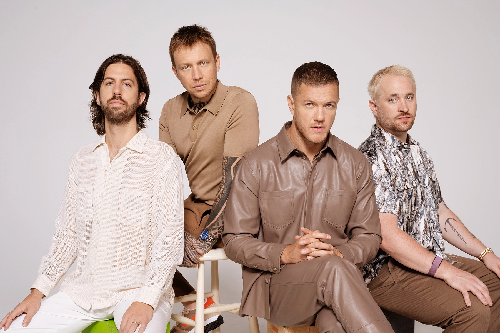
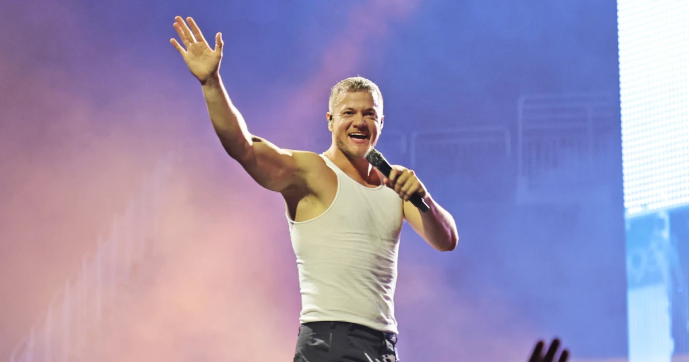
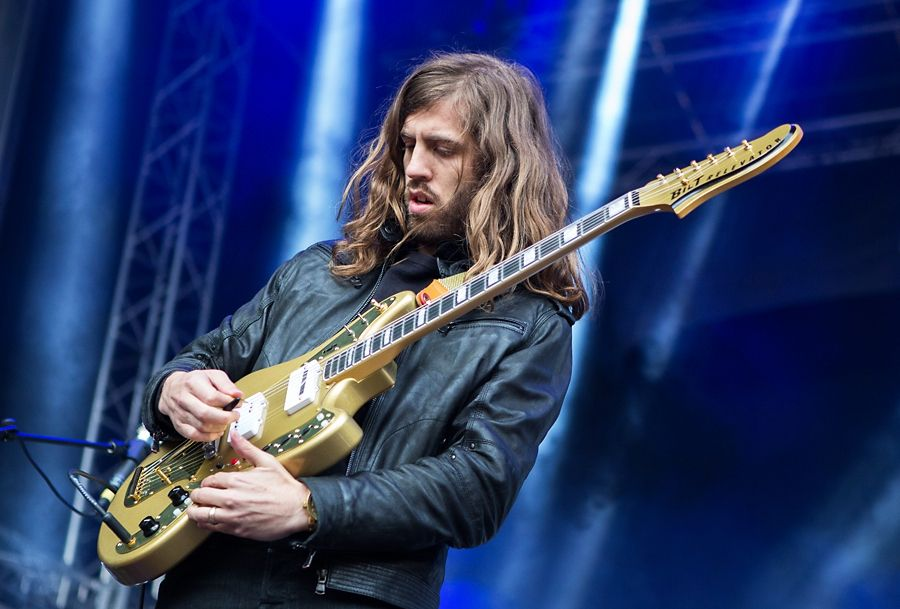
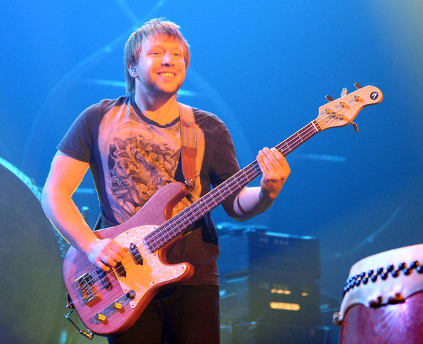
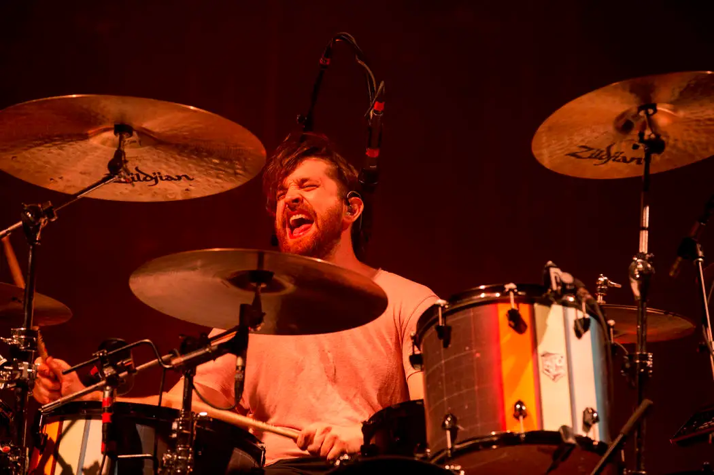

Imagine Dragons

History
In 2008, lead singer Dan Reynolds met drummer Andrew Tolman at Brightman Young University
and both of them went on to recruit Andrew Beck to play the guitar, Dave Lemke to play the
bass and Aurora Florence to play the piano and the initial band name was Anagram. They
released an extended play called "Speak to me" that year but Beck and Florence left the band
later that year. In 2009, Tolman recruited his friend Wayne Sermon to play the guitar and later
on recruited his wife, Brittany Tolman to sing back-up and play keys and they began to play shows
again. Lemke left the band later on, which led Sermon to recruit his friend Ben McKee to play the
bass. The band had a large following in their hometown of Provo, Utah, before they moved to Las
Vegas, where they recorded and released their first three EPs, "Imagine Dragons" on September 1,
2009, "Hell and Silence" on March 10, 2010 and "It's Time" on November 18, 2011. Six months after
they released their third EP, they signed a record deal with Interscope Records on November 18 2011.
They got their first big break when Train's fontman Pat Monahan fell sick just before the Bite of Las
Vegas Festival 2009 leading to Imagine Dragons being called in to perform to more than 26 000 people.
Local accolades such as "Best CD of 2011", "Best Local Indie Band 2010" and more sent them on a positive
trajectory and led them to sign with Interscope Records and begin working with English Grammy Award-winning
producer Alex da Kid. Eventually, the Tolmans left the group, drummer Daniel Platzman and keyboardist
Theresa Flaminio (who later left in early 2012) were recruited by Ben McKee in August 2011, prior to
the band's label deal in November 2011. Together, the 4-man band made two EPs, Continued Silence and
Hear Me before releasing albums.
Albums
The band first gained exposure with the release of their single "It's Time", before dropping their
award-winning debut studio album "Night Visions", which resulted in chart-topping singles
"Radioactive" and "Demons". Their second studio album "Smoke + Mirrors" in 2015 reached No.1 in US,
Canada and the UK. This was followed by their third album "Evolve" in 2017, which resulted in three
chart-topping singles, "Believer", "Thunder" and "Whatever It Takes". This was followed by a fourth
studio album "Origins" in 2018, featuring the single "Natural" which became their fifth song to top
the Hot Rock Songs chart. They released their fifth studio album "Mercury - Act 1" on September 3,
2021 and its follow up "Mercury - Act 2" on July 1, 2022.
Awards
Imagine Dragons has won three American Music Awards, nine Billboard Music Awards, one Grammy Award,
one MTV Video Music Award, and one World Music Award. In May 2014, the band was nominated for 14
Billboard Music Awards, including Top Artist of the Year and a Milestone Award, which recognizes
innovation and creativity of artists across different genres. In April 2018, the band was nominated
11 more times for Billboard Music Awards. Imagine Dragons has sold more than 75 million records
worldwide, making them one of the world's best-selling music artists. They were the most streamed
group of 2018 on Spotify and are the first rock act to have four songs, "Radioactive", "Demons",
"Believer", and "Thunder", to surpass one billion streams each. According to Billboard, "Believer",
"Thunder", and "Radioactive" were the three best performing rock songs of the 2010s.
Dan Reynolds

About
Daniel Coulter Reynolds (born July 14, 1987) is an American singer, songwriter, and record
producer. He is the lead vocalist of the pop rock band Imagine Dragons. He was born in Las
Vegas, the seventh of nine children of Christine M. and Ronald Reynolds. He is a fourth
generation Nevadian. Following his graduation in high school, he attended University of Nevada,
Las Vegas and then transferred to Brigham Young University after serving an LDS mission where he
studied communications, marketing and music and excelled academically. While at BYU, he formed
Imagine Dragons and won the school's battle of the bands competition before leaving to pursue
music full-time.
Career
Reynolds was initially reluctant to become a professional musician as his future bandmate Wayne
Sermon had once told him: "Don't do music because you want to do music - do music if you have to
do music". After he began attending Brigham Young University, he realised that he could not do
anything else and committed fully to a professional music Career. In Utah, he met and recruited
drummer Andrew Tolman to form Imagine Dragons.
Wayne Sermon

About
Daniel Wayne Sermon (born June 15, 1984) is an American musician, songwriter, and record producer.
He is the lead guitarist for the pop rock band Imagine Dragons. He was born in American Fork, Utah
to parents Jeff and Debbie Sermon. He is one of the five children. As a youth, he learnt to play both
cello and guitar and was determined to be a guitarist even as a child. His father had an audio-phile
quality amplifier, a record player, and all of The Beatles albums on Vinyl which Sermon enjoyed
listening to. He also loved the sounds of Tom Scholz (of Boston) and his approach to solos.
He attended Berklee College of Music where he double majored in guitar performance and composition,
graduating in 2008. While at Berklee he was part of a five-guitar jazz fusion ensemble called The
Eclectic Electrics. Sermon has chronic insomnia and will often record songs during the middle of
the night, sleeping only a couple of hours a day.
Career
Wayne Sermon first met Dan Reynolds after hearing him perform at a club in Utah and approaching him
afterwards about his musical interests. Reynolds invited him to join his band and move to Las Vegas.
Sermon then invited Ben McKee to join the band on bass, and drummer Daniel Platzman, also a friend
of Wayne's from Berklee College of Music, became the last member to join the group at the invitation
of McKee.
Ben Mckee

About
Benjamin Arthur McKee (born April 7, 1985) is an American musician, songwriter, and record producer.
He is the bassist for the pop rock band Imagine Dragons. McKee was raised in Forestville, California,
and graduated from El Molino High School. He grew up playing acoustic guitar and violin, before picking
up acoustic bass in fifth grade. In high school, he continued learning bass guitar as a member of a jazz
trio, which influenced his decision to attend Berklee College of Music. While at Berklee, McKee played in
a guitar performance ensemble with future Imagine Dragons bandmates Wayne Sermon and Daniel Platzman.
Career
In 2009, McKee was invited by Wayne Sermon to join Imagine Dragons, based out of Las Vegas. McKee dropped
out of his final semester at Berklee to join the band, inviting Daniel Platzman to play drums, completing
the Imagine Dragons lineup.
Daniel Platzman

About
Daniel James Platzman (born September 28, 1986) is an American musician, songwriter, record producer and composer.
He is the drummer for the pop rock band Imagine Dragons. Platzman was born on September 28, 1986 in Atlanta, Georgia.
He attended Berklee College of Music where he earned a degree in film scoring. While at Berklee, Platzman played in
the Berklee Concert Jazz Orchestra, the Urban Outreach Jazz Orchestra and the Berklee Rainbow Big Band, and received
the Vic Firth Award for Outstanding Musicianship and the Michael Rendish Award in Film Scoring. He also played in a
guitar performance ensemble with future Imagine Dragons bandmates Wayne Sermon and Ben McKee.
Career
In 2011, Platzman was invited by Wayne Sermon to join Imagine Dragons, based out of Las Vegas. McKee dropped out of
his final semester at Berklee to join the band, inviting Daniel Platzman to play drums, completing the Imagine
Dragons lineup.